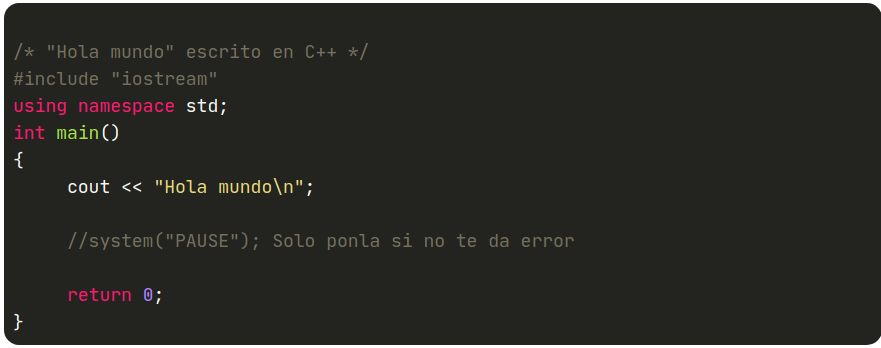
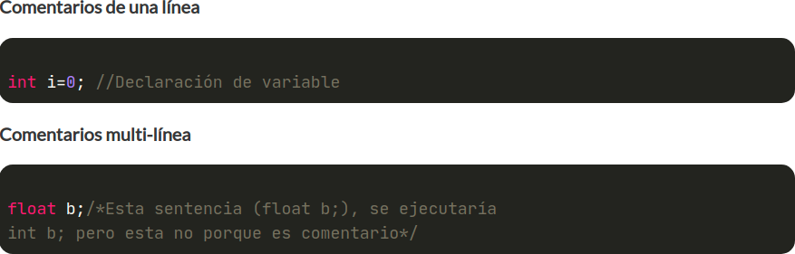
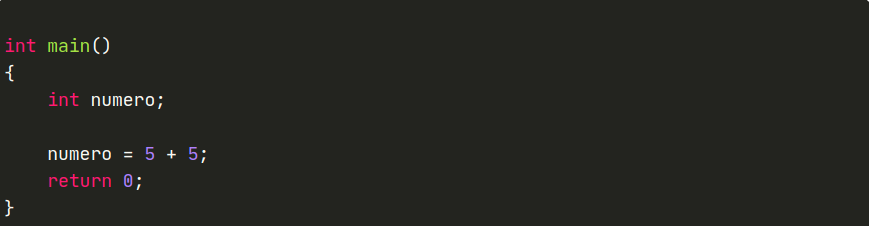

Microsoft ha puesto a disposición del público una versión "gratuita" de uso personal de Visual C++, éste es un completo entorno de desarrollo para C++, incluido en la suite de Visual Studio. Por supuesto, está orientado a aplicaciones en Windows y es uno de los más populares por su facilidad de uso, características y potencia. Posee una completa documentación que permite conocer a fondo el IDE. Requiere por lo menos Windows 7 y debemos descargar el paquete completo para poder usarlo y luego crear una cuenta para descargarlo. Puedes encontrarlo aquí : https://www.programarya.com/Cursos/C++/Sistema-de-Tipos/Tipos-Primitivos
En la mayoría de los entornos de desarrollo el proceso es bastante similar, pero aquí explicaré los detalles relevantes de esto, para que al momento de crear un proyecto, tú mismo, comprendas qué puedes cambiar cuándo y para qué. Como primer paso, necesitamos abrir nuestro entorno de desarrollo, de modo que según nuestro sistema operativo, deberíamos seguir una ruta como la siguiente. Vamos a: Inicio » Todos los Programas » Microsoft Visual Studio Express » Microsoft Visual C++.
Una vez haya iniciado correctamente nuestro entorno de desarrollo, podremos entonces proceder a la creación del nuevo proyecto. Para crear el proyecto, debemos seguir unos pasos bastante simples. En nuestra ventana principal en la parte superior tenemos una serie de opciones, debemos dar clic en: Archivo » Nuevo » Proyecto..., tal como muestra la imagen.
Hecho esto, se nos mostrará una nueva ventana donde podremos seleccionar el tipo de proyecto a crear, tenemos varias opciones, sin embargo de momento que estamos aprendiendo, lo más conveniente es crear un proyecto vacio, también allí podremos ingresar todo acerca de nuestro proyecto como: nombre, ubicación y nombre de la solución. Para este ejemplo, como nombre a nuestro proyecto, le pondremos Curso Aprender A Programar. La ubicación la podemos cambiar dando clic en examinar, sin embargo, es recomendable dejarla en la ubicación por defecto por comodidad y facilidad. El nombre de la solución, se pone automáticamente como el del proyecto, de modo que no habrá necesidad de cambiarlos nosotros mismos. Así nuestra ventana quedaría como la imagen.
En cuanto hayamos rellenado correctamente los campos, podremos dar clic en aceptar. Hecho esto, se nos mostrará una vez más la ventana principal de Visual C++, sin embargo en esta ocasión podremos apreciar una estructura de carpetas en la parte izquierda de la ventana, donde podremos poner de forma ordenada cada archivo. Hecho esto, podremos añadir archivos a nuestro proyecto, archivos de código fuente, archivos de cabecera y demás. Vamos a ver como añadir un archivo de código fuente a nuestro proyecto, para añadir un archivo de cabecera u otro, el proceso es el mismo. Veamos:
Hacemos clic derecho sobre la carpeta de nuestro proyecto llamada "Archivos de código fuente", luego en Agregar y finalmente en Nuevo Elemento... Hecho esto, se nos mostrara una ventana pidiéndonos el tipo de archivo que vamos a crear, su nombre y ubicación. El tipo será Archivo C++ (.cpp), como nombre le pondremos también Curso Aprender A Programar y la ubicación la dejaremos tal y como nos aparece (recomiendo no cambiarla). Nuestra ventana quedaría similar a la mostrada en la imagen. En cuanto tengamos nuestro proyecto creado podremos crear nuestro primer programa. A modo de prueba, vamos a ejecutar el típico Hola Mundo que vimos en la Introducción a C++ de este curso, de modo que podemos copiar de aquí el código y pegarlo en nuestro elemento de código fuente.
/* "Hola mundo" escrito en C++ */
#include "iostream"
using namespace std;
int main()
{
cout "Hola mundo\n";
//system("PAUSE"); Solo ponla si no te da error
return 0;}
A
Una vez pegado el código, podremos ejecutar nuestro primer programa en C++ presionando F5. AL ejecutarlo se nos mostrará una ventana negra que es del símbolo del sistema (DOS o CMD), escribiendo Hola Mundo y una línea más abajo Press any key to continue. Para salir presionamos cualquier tecla y nuestro programa finalizará su ejecución.
Comentarios de Una Sola Línea: Pueden ser colocados en cualquier parte y comienzan por un doble slash "//", al colocar el doble slash al comienzo de cualquier línea de código, todo lo que halla de ahí en adelante en esa misma línea será tomado como comentario, ten en cuenta que el doble slash solo convierte en comentario al texto que halla después de el y que pertenezca a su misma línea, las líneas de abajo de este, no se verán afectadas.
Comentarios Multi-línea: Van cerrados entre "/*" y "*/". Estos comentarios son similares a los anteriores, pero deben tener un comienzo y un fin
B
El programa que vamos a realizar simplemente le dará a una variable el valor del resultado de sumar 5 + 5, cabe resaltar que en pantalla no se muestra nada por lo que la ejecución del programa será prácticamente instantánea Este es nuestro programa:
int main()
{
int numero;
numero = 5 + 5;
return 0;
}
C